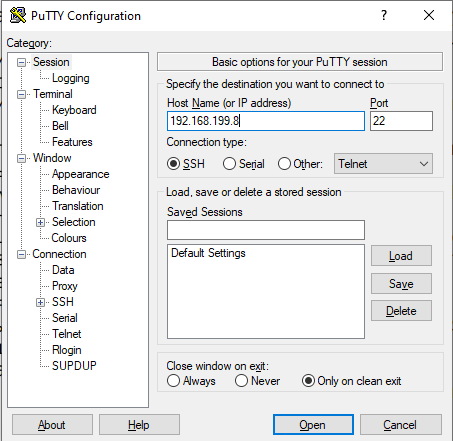
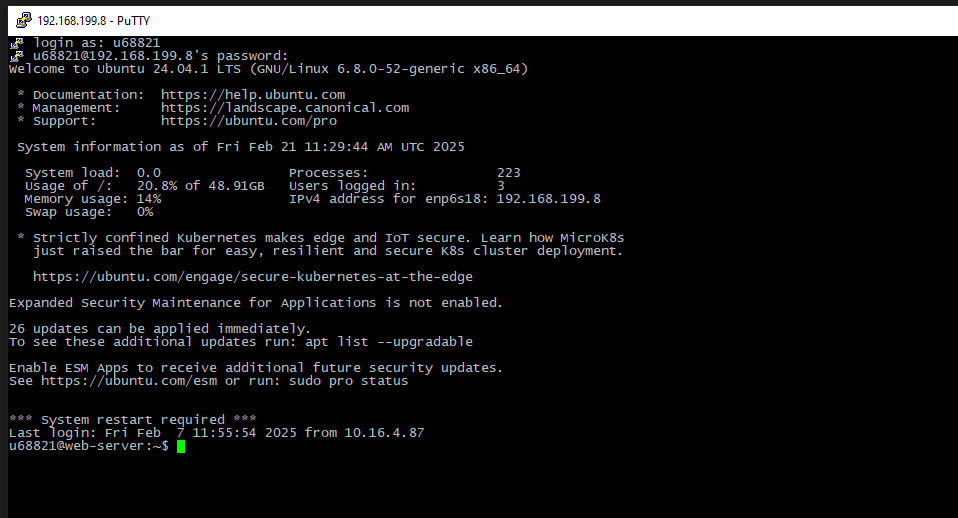
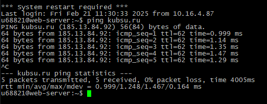
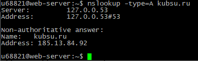
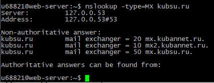

Подключение через PUTTY к серверу

Вход на сервер под своим логином и паролем

ping kubsu.ru
Команда ping проверяет работу с сервером kubsu.ru, отправляя ему запрос и ожидая ответ. Она показывает время, за которое приходит ответ, что помогает оценить скорость соединения.

nslookup -type=A kubsu.ru
Команда nslookup с параметром -type=A запрашивает IP-адрес (тип A) домена kubsu.ru. Это помогает узнать, какой именно IP-адрес присвоен этому сайту в сети интернет.

nslookup -type=MX kubsu.ru
Команда nslookup с параметром -type=MX запрашивает записи типа MX (Mail eXchange) для домена kubsu.ru. Эти записи указывают на серверы, которые принимают электронную почту для этого домена.
Команда whois предоставляет информацию о владельце домена kubsu.ru, дату регистрации, контактные данные регистратора и другие технические детали, связанные с этим доменом.